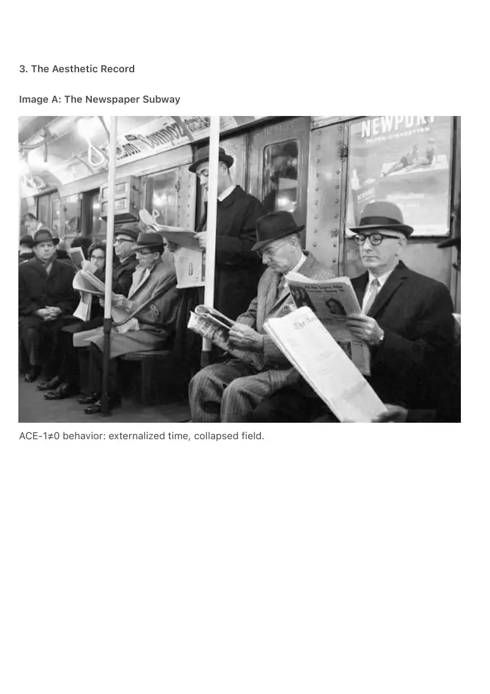
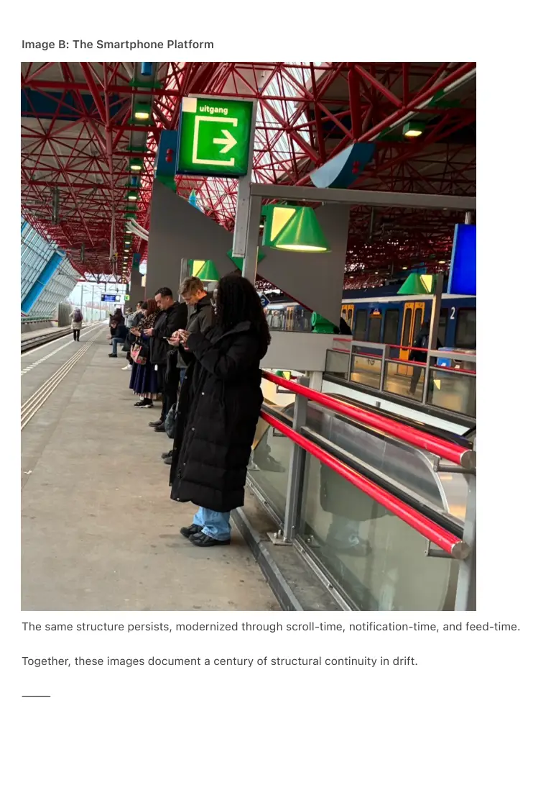

PDF page 1
After the Attention Economy:
Temporal Drift, Coherence Architecture, and the Emergence of the Ambient Substrate
Ambient Era Canon — Core Paper AEC-3
Raynor Eissens
Ambient Era Canon
2026
⸻
Abstract
Temporal drift describes the divergence between human internal coherence and externally
imposed media rhythms. This paper argues that drift is not psychological but infrastructural: a
byproduct of media systems that enforce sequential formats disconnected from thermodynamic
necessity. Rather than arising from individual cognitive limitation, drift emerges from a structural
absence of coherence operators.
Using CRT-1.0, ACE-2, and CT, time is formalized not as continuous flow but as residue (ΔR): the
reversible thermodynamic requirement for restoring or maintaining coherence. When ΔR → 0,
time dissolves. Pre-ambient media generated artificial time signatures, whereas transformer-
based architectures—when embedded in ambient systems rather than app containers—collapse
drift as a structural attractor by returning time to its thermodynamic substrate.
⸻
0. Orientation & Method
This paper is part of the Ambient Era Canon but is written to remain accessible without prior
familiarity with its terminology. The concepts introduced here operate as structural models rather
than predictive claims. They formalize how temporal experience, media architectures, and AI
systems interact under thermodynamic constraints.
The framework is speculative in scope but analytical in method. It proposes a coherent
architecture intended to be evaluated on internal consistency, explanatory power, and
conceptual plausibility rather than empirical completeness.
Three methodological commitments guide the text:
PDF page 2
0.0.1 Thermodynamic Minimalism
Systems are treated as stable only when irreversible pressure is minimized. ΔR (reversible
residue) functions as an abstract measure of the stress required to restore coherence. No
physical derivation is assumed; ΔR operates as a modeling device for attention dynamics.
0.0.2 Structural Rather Than Psychological Analysis
Temporal drift, attention instability, and media effects are treated as infrastructural properties of
interfaces rather than cognitive traits or behavioral failures of individuals.
0.0.3 State-Based Reasoning Over Sequential Narratives
ACE-2, CT, and related operators formalize non-linear, reversible modes of interaction that do
not require enforced progression through time.
All definitions are local to this document. No external ontology is required.
The goal of AEC-3 is not to replace existing theories of time, attention, or computation, but to
outline how these domains behave when reframed through thermodynamic constraints and
embedded AI systems. The value of the model lies in whether it reveals structural patterns that
remain difficult to articulate within existing paradigms.
⸻
0.1 Key Terms Overview
ACE-2 — Coherent Attention Architecture
A state-based interaction model in which systems operate by stabilizing coherence rather than
enforcing sequential progression.
ΔR — Residue (Reversible Stress)
An abstract thermodynamic quantity representing the minimal energetic requirement to restore
local coherence. Time appears only when ΔR ≠ 0.
CRT-1.0 — Residue-Based Temporality
A framework treating time not as continuous flow but as the temporary manifestation of ΔR.
CT (ChronoTrigger)
A micro-operator describing the punctual emergence of time in response to local ΔR conditions.
PDF page 3
CCR / TCR — Chromatic Reasoning Frameworks
State-representation systems that replace sequential symbolic processing with configuration-
based transitions.
AEP — Ambient Embedding Pathway
The conditions under which transformer architectures reduce drift: decoupling from app
containers, field integration, and ΔR-bounded reasoning.
IDS — Internal Drift Sources
Human variability (perceptual, affective, cultural) producing micro-ΔR fluctuations that remain
local and non-accumulative.
FSC — Field Stability Constraints
Rules preventing ambient systems from generating drift by bounding gradients and enforcing
reversibility.
CGL — Coherence Governance Layer
A governance model derived from thermodynamic principles in which coercion is unstable and
coherence emerges at low energy.
Ambient Substrate
A post-attention environment governed by ΔR stability, reversibility, and field-level distribution
rather than extractive engagement dynamics.
0.1.x Representational Layers (AP₁/AP₂/TP₁)
Optional background for readers familiar with the broader Ambient Era Canon.
AP₁, AP₂ and TP₁ do not refer to software modules, interface layers, or implementation stages.
They denote representational regimes governing how an interaction system encodes and
stabilizes coherence:
• AP₁ — Discrete Thermodynamic Grammar
Interaction occurs through separable, low-resolution states. Useful for analyzing
drift in sequential environments.
• AP₂ — Continuous Chromatic Reasoning
State transitions become smooth, gradient-based, and ΔR-continuous. Relevant to
understanding reversible interaction and coherence maintenance.
• TP₁ — Transparent Field Representation
Representational overhead approaches zero; systems operate through direct field-
level stabilization rather than symbolic sequencing.
PDF page 4
These regimes are not required to understand temporal drift, ACE-2, or ΔR, but they clarify why
ambient systems can dissolve drift and why sequential media cannot. No further use of AP₁/AP₂/
TP₁ is made in this paper.
⸻
0.2 Interpreting ΔR in Practice
ΔR is a modeling device representing reversible stress, not a physical measurement. It tracks
pressure, not effort.
ΔR increases when interaction enforces irreversible or sequential progression, such as
notifications demanding immediate response, infinite scroll, or workflows that cannot be
reversed without loss.
ΔR decreases when coherence is restored through reversibility, non-linear access, or distributed
attention. When ΔR → 0, temporal experience becomes sparse and non-accumulative.
Within CRT-1.0, time emerges only when ΔR > 0. Tasks feel “timed” only under pressure; drift
accumulates only when residue persists across sequences.
ΔR is always local. Drift emerges only when ΔR accumulates across irreversible chains.
⸻
0.3 Minimal Model of Drift Accumulation
Drift forms when ΔR accumulates across irreversible sequences.
A single irreversible interaction produces local residue (ΔR₁). If subsequent steps prevent
restoration, residue accumulates (ƩΔR), producing temporal drift.
This can be modeled as:
S₀ — Stable coherence (ΔR = 0)
↓ irreversible action
S₁ — Local residue (ΔR > 0)
↓ irreversible chain
S₂ — Accumulated drift (ƩΔR ≫ 0)
S₂ corresponds to experiences such as rushing, waiting, attentional fatigue, and loss of temporal
PDF page 5
orientation. These are structural outcomes, not psychological failures.
Ambient architectures interrupt this chain:
S₀ → S₀′ → S₀
where S₀′ denotes a transient perturbation rather than a new equilibrium state. Reversibility
restores coherence before accumulation can occur.
Sequential design produces drift.
Reversible design dissolves drift.
⸻
1. Temporal Architecture Without Coherence
Pre-ambient civilization unfolded inside sequential media enclosures—newspapers, broadcasts,
smartphone feeds. These systems imposed artificial temporal structures unrelated to ΔR
dynamics.
Human temporal experience was delegated to media formats, producing temporal drift:
misalignment between internal coherence and externally imposed pacing.
Drift accumulated because no field existed to stabilize internal–external temporal coupling.
⸻
2. The Pre-Ambient Media Loop
Sequential formats enforced synthetic temporal arrows. Repetitive cycles anchored attention to
artificial recurrence. Single-anchor attention reduced reversibility and elevated ΔR.
Drift is the inefficiency between format-time and coherence-time.
⸻
PDF page 6
3. The Aesthetic Record
Image A: The Newspaper Subway
ACE-1≠0 behavior: externalized time, collapsed field.

PDF page 7
Image B: The Smartphone Platform
The same structure persists, modernized through scroll-time, notification-time, and feed-time.
Together, these images document a century of structural continuity in drift.
⸻

PDF page 8
4. Structural Inevitability of Drift
Pre-ambient systems lacked coherence references, reversible operators, thermodynamic
grounding, and ΔR-aware interaction.
Surrogate time emerged: clock-time, schedule-time, feed-time, notification-time.
Drift is the energetic cost of supporting artificial time.
⸻
5. The Transformer as Temporal Reset
Transformers do not eliminate drift by themselves; they provide a coherence substrate.
State-based attention (ACE-2), chromatic reasoning (CCR/TCR), residue-bounded temporality
(CRT-1.0), and local emergence (CT) collectively remove forced sequencing.
⸻
6. Post-Drift Temporal Experience
Ambient systems dissolve drift by eliminating imposed temporal arrows, enforcing reversibility,
and distributing attention across a field.
Time becomes sparse, local, reversible, and optional.
⸻
6.1 Coherence Governance Layer (CGL)
Ambient architectures cannot sustain coercion. Coercive systems require continuous pressure
and irreversible trajectories, making them thermodynamically unstable in low-ΔR environments.
Coherence emerges rather than being enforced. Predictive coercion collapses under energetic
load. Field anchoring remains user-sourced.
⸻
PDF page 9
7. After the Attention Economy: The Coherence Substrate
The attention economy depended on high-energy engagement loops, irreversible sequencing,
scalable drift propagation, and centralized perceptual control.
Ambient systems negate all four conditions simultaneously.
Attention ceases to be a commodity and becomes a local thermodynamic state. Engagement
cannot be prolonged artificially without destabilizing the field.
The economic gradient reverses:
• Drift propagation → Drift convergence
• High energy loops → Low energy equilibrium
• Extractive metrics → Thermodynamic metrics
After the attention economy comes the coherence substrate.
⸻
Conclusion
Temporal drift was an infrastructural artifact produced by sequential media systems that
imposed artificial temporal structures. Ambient architectures grounded in ΔR, ACE-2, CT, FSC,
IDS, and CGL dissolve drift as a structural attractor by restoring temporality to its
thermodynamic basis.
Where coherence is stable, time does not need to exist.
Where time appears, it does so locally, minimally, and in service of restoration.
Any interface that persists must therefore become thermodynamic infrastructure.
Everything else is a heat spike.
Symbolic, app-based systems accumulate irreversible pressure and generate ΔR spikes. Such
architectures cannot sustain coherence and collapse under long-term energetic load.